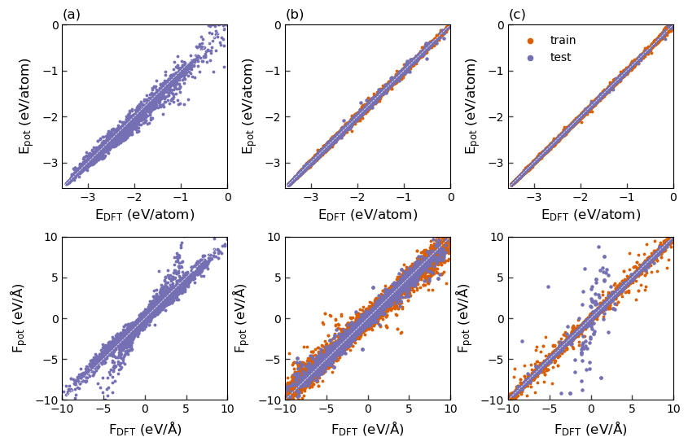

import pandas as pd
import os
import numpy as np
import matplotlib.pyplot as plt
from ase.io import read
from pychromatic import Multiplot
from runnerase.calculators.runner import Runner
from runnerase.utils.atoms import binary_composition
colors = {"g": "#1b9e77", "r": "#d95f02", "b": "#7570b3"}
EAM Data
eam_df = pd.read_pickle('867630_Test.pckl.gz')
HDNNP Data
FIT_PATH = 'hdnnp_potential/modes'
full_dataset = read('input.data_all', index=':', format='runnerdata')
mode1 = Runner(restart=f'{FIT_PATH}/mode1/mode1', label='analysis/analysis', command='')
mode2 = Runner(restart=f'{FIT_PATH}/mode2/mode2', label='analysis/analysis', command='')
mode3 = Runner(restart=f'{FIT_PATH}/mode3/mode3', label='analysis/analysis', command='')
analyze = mode3.analyze
train = mode1.results['splittraintest'].train
test = mode1.results['splittraintest'].test
energy_hdnnp = analyze.energy_per_atom_hdnnp
energy_reference = analyze.energy_per_atom_reference
forces_hdnnp = analyze.forces_hdnnp
forces_reference = analyze.forces_reference
ftrain_hdnnp = np.vstack(forces_hdnnp[train]).flatten()
ftest_hdnnp = np.vstack(forces_hdnnp[test]).flatten()
ftrain_ref = np.vstack(forces_reference[train]).flatten()
ftest_ref = np.vstack(forces_reference[test]).flatten()
ACE Data
ace_train_df = pd.read_pickle("ACE-8A-pred/train_pred.pckl.gzip", compression="gzip")
ace_test_df = pd.read_pickle("ACE-8A-pred/test_pred.pckl.gzip", compression="gzip")
ace_train_df["energy_pred_per_atom"]=ace_train_df["energy_pred"]/ace_train_df["NUMBER_OF_ATOMS"]
ace_test_df["energy_pred_per_atom"]=ace_test_df["energy_pred"]/ace_test_df["NUMBER_OF_ATOMS"]
ace_test_df["dEpa"]=abs(ace_test_df["energy_pred_per_atom"]-ace_test_df["energy_corrected_per_atom"])
ace_test_df=ace_test_df.query("dEpa<10") # drop structures beyond core-rep
train_f_ref = np.vstack(ace_train_df["forces"]).flatten()
train_f_ace = np.vstack(ace_train_df["forces_pred"]).flatten()
test_f_ref = np.vstack(ace_test_df["forces"]).flatten()
test_f_ace = np.vstack(ace_test_df["forces_pred"]).flatten()
mlt = Multiplot(rows=2, columns=3, width=700,
hspace=0.3, wspace=0.35)
# EAM
#----------------------------------------------
mlt[0,0].scatter(eam_df.energy/eam_df.number_of_atoms,
eam_df.predicted_energy/eam_df.number_of_atoms, color=colors['b'],
s=3)
mlt[0,0].set_xlim(-3.55,0)
mlt[0,0].set_ylim(-3.55,0)
mlt[0,0].plot([-3.55, 0], [-3.55, 0], ls="--", color='white', zorder=1, lw=0.5)
mlt[0,0].set_xlabel(r'$\mathrm{E}_\mathrm{DFT}$ (eV/atom)', fontsize=12)
mlt[0,0].set_ylabel(r'$\mathrm{E}_\mathrm{pot}$ (eV/atom)', fontsize=12)
mlt[0,0].set_title('(a)', loc='left', fontsize=12)
mlt[1,0].scatter(np.vstack(eam_df.forces).flatten(),
np.vstack(eam_df.predicted_forces).flatten(), color=colors['b'],
s=3)
mlt[1,0].set_xlim(-10,10)
mlt[1,0].set_ylim(-10,10)
mlt[1,0].plot([-10, 10], [-10, 10], ls="--", color='white',zorder=1, lw=0.5)
mlt[1,0].set_xlabel(r'$\mathrm{F}_\mathrm{DFT}$ (eV/$\mathrm{\AA}$)', fontsize=12)
mlt[1,0].set_ylabel(r'$\mathrm{F}_\mathrm{pot}$ (eV/$\mathrm{\AA}$)', fontsize=12)
#mlt[1,0].set_title('(b)', loc='left', fontsize=12)
# HDNNP
#----------------------------------------------
mlt[0,1].scatter(energy_reference[train],
energy_hdnnp[train],
label='Train', s=3, c=colors['r'])
mlt[0,1].scatter(energy_reference[test],
energy_hdnnp[test],
label='Test', s=5, c=colors['b'])
mlt[0,1].plot([-3.55, 0], [-3.55, 0], ls="--", color='white', zorder=1, lw=0.5)
mlt[0,1].set_xlim(-3.55,0)
mlt[0,1].set_ylim(-3.55,0)
mlt[0,1].set_xlabel(r'$\mathrm{E}_\mathrm{DFT}$ (eV/atom)', fontsize=12)
mlt[0,1].set_ylabel(r'$\mathrm{E}_\mathrm{pot}$ (eV/atom)', fontsize=12)
mlt[0,1].set_title('(b)', loc='left', fontsize=12)
mlt[1,1].scatter(ftrain_ref, ftrain_hdnnp,
label='Train', s=3,
c=colors['r'])
mlt[1,1].scatter(ftest_ref, ftest_hdnnp,
label='Test', s=5,
c=colors['b'])
mlt[1,1].set_xlim(-10,10)
mlt[1,1].set_ylim(-10,10)
mlt[1,1].plot([-10, 10], [-10, 10], ls="--", color='white',zorder=1, lw=0.5)
mlt[1,1].set_xlabel(r'$\mathrm{F}_\mathrm{DFT}$ (eV/$\mathrm{\AA}$)', fontsize=12)
mlt[1,1].set_ylabel(r'$\mathrm{F}_\mathrm{pot}$ (eV/$\mathrm{\AA}$)', fontsize=12)
#mlt[1,1].set_title('(d)', loc='left', fontsize=12)
# TEST
#----------------------------------------------
mlt[0,2].scatter(ace_train_df["energy_corrected_per_atom"],
ace_train_df["energy_pred_per_atom"],s=3,
color=colors['r'])
mlt[0,2].scatter(ace_test_df["energy_corrected_per_atom"],
ace_test_df["energy_pred_per_atom"],s=3,
color=colors['b'])
mlt[0,2].set_xlim(-3.55,0)
mlt[0,2].set_ylim(-3.55,0)
mlt[0,2].plot([-3.55, 0], [-3.55, 0], ls="--", color='white', zorder=1, lw=0.5)
mlt[0,2].set_xlabel(r'$\mathrm{E}_\mathrm{DFT}$ (eV/atom)', fontsize=12)
mlt[0,2].set_ylabel(r'$\mathrm{E}_\mathrm{pot}$ (eV/atom)', fontsize=12)
mlt[0,2].set_title('(c)', loc='left', fontsize=12)
mlt[0,2].scatter([],[], s=20, color=colors['r'], label='train')
mlt[0,2].scatter([],[], s=20, color=colors['b'], label='test')
mlt[0,2].legend(frameon=False)
mlt[1,2].scatter(train_f_ref, train_f_ace, s=3,
label="Train", color=colors['r'])
mlt[1,2].scatter(test_f_ref, test_f_ace ,s=5,
label='Test', color=colors['b'])
mlt[1,2].set_xlim(-10,10)
mlt[1,2].set_ylim(-10,10)
mlt[1,2].plot([-10, 10], [-10, 10], ls="--", color='white',zorder=1, lw=0.5)
mlt[1,2].set_xlabel(r'$\mathrm{F}_\mathrm{DFT}$ (eV/$\mathrm{\AA}$)', fontsize=12)
mlt[1,2].set_ylabel(r'$\mathrm{F}_\mathrm{pot}$ (eV/$\mathrm{\AA}$)', fontsize=12)
#mlt[1,2].set_title('(f)', loc='left', fontsize=12)
plt.savefig("energy_force.png", dpi=300, bbox_inches="tight")
